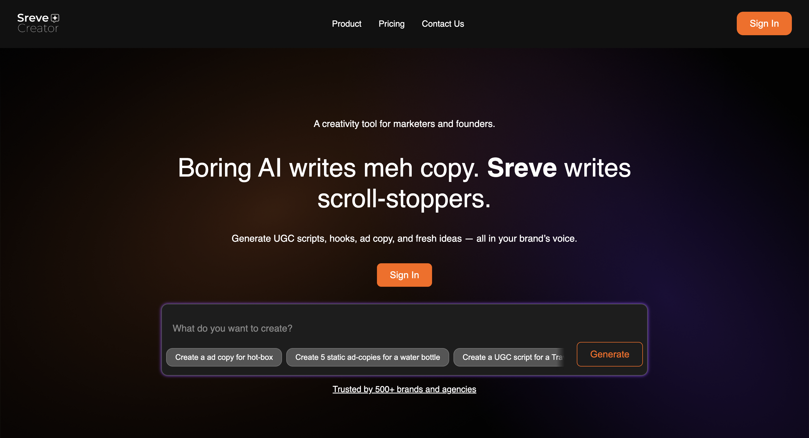

1. Sreve AI – Creative Ideas That Win Pitches

Sreve AI is built for agencies that live and breathe creativity. It generates ad concepts, Instagram post ideas, and campaign scripts that feel human — not robotic. Perfect when you need ideas that actually impress clients.
2. Copy AI – Quick Ad Copy Ideas
-min.png)
Copy AI helps agencies and performance marketers create dozens of ad variations in seconds. No more staring at a blank page — just pick a tone, add your product, and you’re ready to test.
3. Jasper AI – The Agency Assistant

Jasper is like an agency AI teammate. From long-form blogs to AI ad campaigns, it gives ad agencies more output with less time spent writing.
4. Writesonic – High-Performance Ad Copy
Writesonic helps performance marketers craft ad copy optimized for conversions. Great for testing headlines and running multiple AI ad variations in parallel.
5. Surfer SEO – Smarter Content for Agencies
If your agency also manages blogs, Surfer SEO is the tool for you. It blends AI with keyword data, helping you rank higher and get more organic traffic — something every ad agency wants.